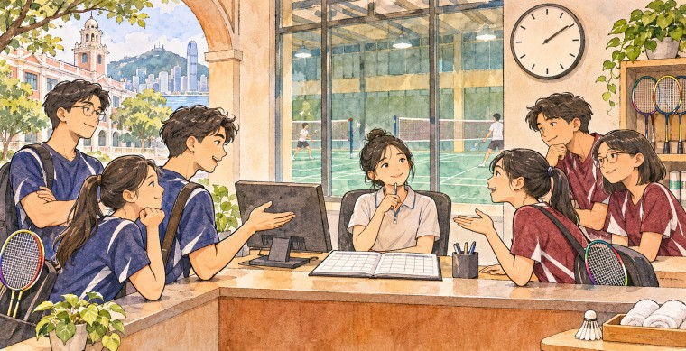

作为打击炒卖场地措施的一部分，香港宣布，部分通过「智方便」验证身份的 SmartPLAY 康体通用户可提前15分钟预约。规则改变了谁能先预约，那么谁会因此获得使用场地的机会？
你负责分配某大学晚上7点时段最后一片可订的羽毛球场地。两个社团都想订下整整一小时。若把时间分给双方，任何一方都没有足够时间打完比赛。请在知道谁能到场预约之前公布规则。
你会公布哪条规则？说出你希望实现的结果，以及这条规则会带来的一项代价。
教务负责人查了课表，发现B社团所有成员中午都有必修实验课。A社团可以派一名代表到场。两个社团都能在中午前网上报名抽签或出价。
你会在开放预约前修改规则吗？在每条规则下，B社团获得场地的机会取决于什么？
按现场排队的规则，B现在没有任何机会。如果两个社团都有效报名，各自的中签概率都是一半。竞价有利于既愿意又有能力付钱的一方。不知道出价或预算，就无法判断谁会胜出。
第0–3分钟：投票，两人一组交流各自的理由。第3–7分钟：揭晓变化了的情况，再投一次票。第7–12分钟：梳理不同答案，看看如何理解其中的分歧。主张排队的学生可能看重的是社团愿不愿意为订场付出努力。追问：有什么证据能说明，到场排队体现的是这种投入，而不只是课表上刚好有空？再问支持抽签的学生：如果有一个社团的需求大得多，这条规则会如何对待它？给双方各一分钟，为各自的目标辩护。